文献信息Article Information
地球与空间科学
Earth and Space Science
研究论文
RESEARCH ARTICLE
10.1029/2021EA001798
10.1029/2021EA001798
积雪对冬季青藏高原地表加热日变化的调制：观测分析
Modulation of Snow on the Daily Evolution of Surface Heating Over the Tibetan Plateau During Winter: Observational Analyses
Yufei Xin¹、Ge Liu¹,² 和 Yueli Chen¹
Yufei Xin¹, Ge Liu¹,², and Yueli Chen¹
¹中国气象科学研究院灾害天气国家重点实验室，中国北京
¹State Key Laboratory of Severe Weather, Chinese Academy of Meteorological Science, Beijing, China
²气象灾害预报预警与评估协同创新中心，南京信息工程大学，中国南京
²Collaborative Innovation Centre on Forecast and Evaluation of Meteorological Disasters, Nanjing University of Information Science and Technology, Nanjing, China
通讯作者：
Correspondence to:
Y. Xin 和 G. Liu，
Y. Xin and G. Liu,
xinyf@cma.gov.cn;
xinyf@cma.gov.cn;
liuge@cma.gov.cn
liuge@cma.gov.cn
引用格式：
Citation:
Xin, Y., Liu, G., & Chen, Y. (2021).
Xin, Y., Liu, G., & Chen, Y. (2021).
积雪对冬季青藏高原地表加热日变化的调制：观测分析。
Modulation of snow on the daily evolution of surface heating over the Tibetan Plateau during winter: Observational analyses.
《地球与空间科学》，8，e2021EA001798。
Earth and Space Science, 8, e2021EA001798.
https://doi.org/10.1029/2021EA001798
https://doi.org/10.1029/2021EA001798
2021年4月18日收稿
Received 18 APR 2021
2021年7月25日接受
Accepted 25 JUL 2021
© 2021。
© 2021.
作者。
The Authors.
《地球与空间科学》由Wiley Periodicals LLC代表美国地球物理学会出版。
Earth and Space Science published by Wiley Periodicals LLC on behalf of American Geophysical Union.
本文依据知识共享署名—非商业性使用—禁止演绎许可证条款开放获取；在恰当引用原作、用于非商业目的且不作任何修改或改编的前提下，该许可证允许以任何媒介使用和传播本文。
This is an open access article under the terms of the Creative Commons Attribution-NonCommercial-NoDerivs License, which permits use and distribution in any medium, provided the original work is properly cited, the use is non-commercial and no modifications or adaptations are made.
要点Key Points
关键点：
Key Points:
积雪调制的青藏高原地表加热日演变对亚洲大气环流具有重要意义
The daily evolution of surface heating over the Tibet Plateau modulated by snow is of great importance to Asian atmospheric circulation
积雪对地表热通量的影响不同于相近纬度的低海拔地区
The impact of snow on surface heat flux is different from the similar latitude low-altitude regions
ERA5和CFS再分析数据集未能再现积雪对地表热通量的这种影响
The ERA5 and CFS reanalysis data sets fail to reproduce this snow impact on surface heat flux
摘要Abstract
摘要
Abstract
研究降雪对青藏高原（TP）湍流通量日演变的调制，对于理解TP热源/汇变化的特征及其对亚洲大气环流和天气过程的贡献具有重要意义。
Studying the daily evolution of turbulent fluxes modulated by snowfall over the Tibetan Plateau (TP) is of great importance to understand the features of the change in the TP heat source/sink and its contribution to Asian atmospheric circulation and weather processes.
然而，TP地区数据匮乏限制了深入研究。
However, the lack of data over the TP restricts the detailed studies.
基于第三次青藏高原大气科学试验四个站点的观测资料，本文研究了受积雪影响的地表能量收支过程。
Based on observations from four sites of the Third TP Atmospheric Scientific Experiment, the process of surface energy balance impacted by snow is investigated.
结果表明，地表反照率在降雪首日大幅升高，随后缓慢降低。
The results show that the surface albedo largely increases on the first day of snow and then slowly decreases.
相应地，感热通量（H）在降雪后急剧下降，随后在大约10天内逐渐恢复到原有水平。
Correspondingly, the sensible heat (H) flux sharply decreases after snow and then gradually recovers to the original level during the following approximately 10 days.
潜热通量（LE）在降雪后变得更加活跃且更强，其持续时间也长于H，因为融雪后土壤水分可能仍有助于维持较高的LE。
The latent heat (LE) flux becomes more active and stronger after snowfall and persists for a longer period than H, since the soil moisture may still contribute to a high LE after snowmelt.
作为H和LE受积雪调制的协同结果，TP地表湍流加热（即H与LE之和）在降雪事件初期减弱，随后在融雪后甚至增强到高于降雪前的水平。
As the synergistic result of H and LE modulated by snow, the surface turbulent heating (i.e., the sum H and LE) of the TP decreases at the early period of snow events and then even enhances to a higher level after the snowmelt than before snow.
对比分析表明，积雪对TP地区H和LE的影响远强于北美和欧洲相近纬度的低海拔地区，这可能部分归因于TP地区与积雪过程相关的地表净太阳辐射变化幅度更大且更为剧烈。
Comparison analyses reveal that the impact of snow on the H and LE over the TP is much stronger than over similar latitude low-altitude regions in North America and Europe, which may be partly attributed to the larger and more drastic change of the surface net solar radiation associated with snow processes in the TP.
ERA5和CFS再分析数据集未能再现积雪对热通量的调制，这表明应基于TP地区的观测分析进一步改进模式的物理方案。
The ERA5 and CFS reanalysis data sets fail to reproduce the modulation of snow on the heat fluxes, which suggests that the physical schemes of the models should be further improved based on the observational analyses over TP.
本研究可能有助于进一步认识冬季降雪事件调制亚洲天气过程的详细物理过程，也有利于改进模式的地表参数化方案。
This study may help further understand the detailed physical processes of modulation of snow events on Asian weather processes during winter and is also conducive to the improvement of surface parameterization schemes of models.
引言1. Introduction
1. 引言
1. Introduction
青藏高原（TP）地处欧亚大陆中东部的副热带地区，是世界上海拔最高的高原，平均海拔超过海平面以上4,000 m。
The Tibetan Plateau (TP), located at the subtropical central and eastern Eurasian continent, is the highest in the world, with a mean elevation higher than 4,000 m above sea level.
TP在夏季通常表现为高架大气热源，而在冬季则表现为冷源（Flohn, 1957; Yeh et al., 1957）。
The TP generally acts as an elevated atmospheric heat source during summer but a heat sink during winter (Flohn, 1957; Yeh et al., 1957).
这一热源/汇在调制TP邻近乃至更广区域的天气和气候方面发挥着重要作用。
The heat source/sink plays an important part in modulating weather and climate over the TP adjacent and even broader regions.
TP高架热源应被视为驱动南亚和东亚夏季风的最重要因素之一（Flohn, 1957; Yeh et al., 1957; Yin, 1949）。
The elevated heat source of the TP should be considered as one of the most important factors that drive the South and East Asian summer monsoons (Flohn, 1957; Yeh et al., 1957; Yin, 1949).
许多研究基于不同数据集和数值试验，揭示了TP热力异常对大气环流季节转换及相关亚洲季风爆发的贡献（Duan & Wu, 2005; He et al., 1987; Liu et al., 2001, 2002; Luo and Yanai, 1983; Nitta, 1983, 1984; Shen et al., 1984; Tao & Chen, 1987; Wu et al., 2003; Yanai et al., 1992; Yanai & Li, 1994; Yeh & Gao, 1979）。
Based on different data sets and numerical experiments, the contribution of the TP thermal anomaly to the seasonal transition of atmospheric circulation and the associated onset of the Asian monsoon has been revealed by many studies (Duan & Wu, 2005; He et al., 1987; Liu et al., 2001, 2002; Luo and Yanai, 1983; Nitta, 1983, 1984; Shen et al., 1984; Tao & Chen, 1987; Wu et al., 2003; Yanai et al., 1992; Yanai & Li, 1994; Yeh & Gao, 1979).
近期研究提出，TP的热力异常可能会调整东亚、太平洋、欧洲乃至非洲的大气环流及相关气候变率（Duan et al., 2013; Duan & Wu, 2005; Liu et al., 2014, 2015, 2017; Lu et al., 2018; Nan et al., 2019, 2020; Wu et al., 2016），显示出夏季影响范围更广。
Recent studies have argued that the thermal anomaly of the TP may adjust the atmospheric circulation and associated climate variability over East Asia, the Pacific, Europe, and even Africa (Duan et al., 2013; Duan & Wu, 2005; Liu et al., 2014, 2015, 2017; Lu et al., 2018; Nan et al., 2019, 2020; Wu et al., 2016), showing a broader effect during summer.
在早期研究中，TP被视为能够阻挡并调制大气环流的大尺度地形（Bolin, 1950; Charney & Eliassen, 1949; Queney, 1948; Yeh, 1950）。
In earlier research, the TP was regarded as a large-scale topography that blocks and modulates the atmospheric circulation (Bolin, 1950; Charney & Eliassen, 1949; Queney, 1948; Yeh, 1950).
这种动力阻挡作用在冬季更为关键（Ma et al., 2014）。
Such an effect of dynamical blocking is more crucial in winter (Ma et al., 2014).
此外，许多研究报道了TP冬季积雪覆盖异常与印度（Dey & Bhanukumar, 1983; Dey & Kathuria, 1986; Dey et al., 1985）及东亚（Chen et al., 2000; Tao & Chen, 1987; Wei & Luo, 1994; Wu & Qian, 2000; Wu et al., 2003; Xu et al., 1994; Zhai & Zhou, 1997）夏季风及相关降水异常之间的跨季节关系。
Besides, many studies that reported the cross-season relationship between the winter snow cover anomaly in the TP and summer monsoon and associated rainfall anomalies over India (Dey & Bhanukumar, 1983; Dey & Kathuria, 1986; Dey et al., 1985), and East Asia (Chen et al., 2000; Tao & Chen, 1987; Wei & Luo, 1994; Wu & Qian, 2000; Wu et al., 2003; Xu et al., 1994; Zhai & Zhou, 1997).
然而，较少有研究关注冬季积雪，以及与其相关的TP加热效应对同期天气和气候变率的影响。
However, fewer studies focus on the winter snow and the related heating effect of the TP on the simultaneous weather and climate variability.
Nan and Zhao（2012）揭示，1月TP周边的大气冷源可造成中国中东部地区的大气环流及相关降水异常。
Nan and Zhao (2012) revealed that the atmospheric cold source around the TP can result in atmospheric circulation and associated precipitation anomalies over central-eastern China during January.
Li et al.（2018）发现，TP积雪覆盖通过调制感热通量（H）和潜热通量（LE），对冬季中期时间尺度上的亚洲大气环流和天气产生显著影响。
Li et al. (2018) found that through modulating the sensible (H) and latent (LE) heat fluxes, the TP snow cover has a significant influence on the Asian atmospheric circulation and weather on medium-range time scales during winter.
显然，研究TP降雪调制的H和LE短时（如逐日）演变，对于进一步认识TP热源/汇的作用及其对亚洲大气环流和天气过程的潜在贡献大有裨益。
Obviously, investigating the short-time (e.g., daily) evolution of the H and LE modulated by the TP snowfall is of great benefit to further understand the effect of the heat source/sink of the TP and its potential contribution to Asian atmospheric circulation and weather processes.
然而，TP地区数据匮乏限制了深入研究。
However, the lack of data over the TP restricts detailed studies.
近年来，通过第三次青藏高原大气科学试验（TIPEX-III；Zhao et al., 2018; Xin et al., 2018），获得了最新的涡动协方差观测数据和行星边界层数据。
In recent years, through the Third Tibetan Plateau Atmospheric Scientific Experiment (TIPEX-III; Zhao et al., 2018; Xin et al., 2018), updated observational eddy-covariance and planetary boundary layer data have been obtained.
这些观测数据为进一步研究这种与降雪相关的H和LE日演变提供了可能。
The observational data provide a possibility to further study this snowfall-related daily evolution of H and LE.
本文其余部分安排如下。
This rest of the paper is organized as follows.
第2节介绍所用数据。
The data are described in Section 2.
第3节给出研究结果。
The results are presented in Section 3.
最后，第4节给出总结及相关讨论。
Finally, a summary and related discussions are provided in Section 4.
研究区与数据2. Study Area and Data
2. 研究区域与数据
2. Study Area and Data
观测站点的地理信息和地表特征见表1。
The geographic information and land surface characteristics of the observation sites are shown in Table 1.
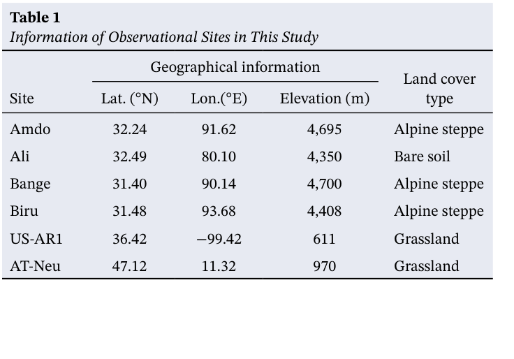
表1
Table 1
本研究观测站点信息
Information of Observational Sites in This Study
地理信息
Geographical information
地表覆盖类型
Land cover type
站点
Site
纬度（°N）
Lat. (°N)
经度（°E）
Lon.(°E)
海拔（m）
Elevation (m)
安多
Amdo
32.24
32.24
91.62
91.62
4,695
4,695
高寒草原
Alpine steppe
阿里
Ali
32.49
32.49
80.10
80.10
4,350
4,350
裸土
Bare soil
班戈
Bange
31.40
31.40
90.14
90.14
4,700
4,700
高寒草原
Alpine steppe
比如
Biru
31.48
31.48
93.68
93.68
4,408
4,408
高寒草原
Alpine steppe
US-AR1
US-AR1
36.42
36.42
−99.42
−99.42
611
611
草地
Grassland
AT-Neu
AT-Neu
47.12
47.12
11.32
11.32
970
970
草地
Grassland
图1给出了这些站点的位置，包括TP的四个站点，以及分别位于欧洲和北美的两个低海拔草地站点。
Figure 1 presents the locations of these sites, including four sites in the TP and two low-altitude grassland sites in Europe and North America, respectively.
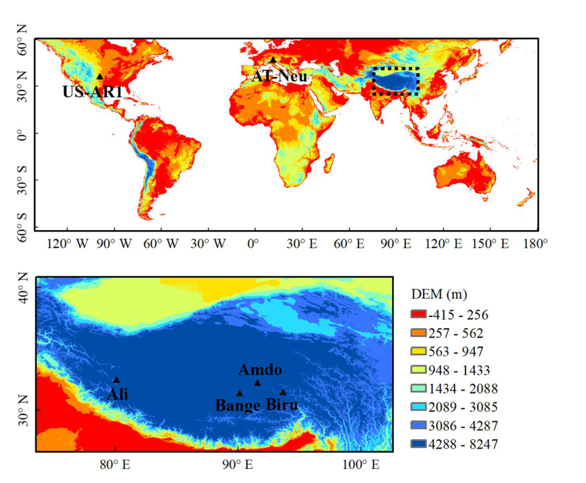
图1。
Figure 1.
观测站点的位置，包括北美的US-AR1和CA-NS7、欧洲的AT-Neu，以及青藏高原（TP）的阿里、班戈、安多和比如。
The locations of the observation sites, including US-AR1 and CA-NS7 in North America, AT-Neu in Europe, Ali, Bange, Amdo, and Biru in the Tibetan Plateau (TP).
下方放大图显示了TP区域。
The TP domain is shown in the bottom amplificatory figure.
彩色阴影表示地形海拔。
The color shadings denote the altitude of topography.
TP四个站点的观测数据来自始于2014年夏季且仍在持续开展的TIPEX-III（Zhao et al., 2018）。
The observational data from four sites at the TP were obtained from the TIPEX-III (Zhao et al., 2018) that started in the summer of 2014 and continues to be conducted.
TIPEX-III的陆气相互作用任务共涉及10个站点（Xin et al., 2018）。
There are 10 sites that are involved in the land-atmospheric interaction mission of TIPEX-III (Xin et al., 2018).
然而，本研究仅使用了其中四个站点的数据，因为其余六个站点的大部分冬季观测数据缺失或未能通过质量控制检验。
However, only the data from the four sites were used in this study since most of the winter observational data from the other six sites are missing or fail to pass the quality control test.
短波（SW）辐射、长波（LW）辐射、气温、降水量及其他变量由大气梯度和太阳辐射慢响应传感器获取，时间分辨率为30 min。
The shortwave (SW) radiation, longwave (LW) radiation, air temperature, amount of precipitation, and the other variables at a temporal resolution of 30 min were obtained from the slow-response sensor for the atmospheric gradient and solar radiation.
由超声风速仪和气体分析仪的快速响应传感器获取的湍流通量，已基于原始涡动协方差数据进行通量订正处理（Xin et al., 2018）。
The turbulent fluxes, which were obtained from fast-response sensors for sonic anemometers and gas analyzers, have been processed by flux correction from raw eddy-covariance data (Xin et al., 2018).
欧洲和北美两个低海拔站点（图1）的数据来自FLUXNET数据集（https://fluxnet.fluxdata.org/）。
The data for the two sites in low-altitude Europe and North America (Figure 1) were acquired from the FLUXNET data set (https://fluxnet.fluxdata.org/).
与TP的四个站点类似，这两个低海拔站点的地表也由草地或裸土覆盖，且冬季存在积雪覆盖。
Similar to the four sites in the TP, the two low-altitude sites are also covered by grassland or bare soil and possess snow cover in winter.
此外，这两个站点的纬度也尽可能接近TP各站点。
Moreover, the latitudes of the two sites are as close to the TP sites as possible.
位于俄克拉何马州伍德沃德、数据来自美国农业部南部平原牧场研究站的Woodward Switchgrass 1站点（US-AR1）拥有4年数据，起始于2009年1月1日（2002年）0:00，结束于2012年12月31日（2005年）23:30。
The Woodward Switchgrass 1 site (US-AR1), obtained from the U.S. Department of Agriculture Southern Plains Range Research Station in Woodward, Oklahoma, has 4 years of data, beginning at 0:00 on January 1, 2009 (2002) and ending at 23:30 on December 31, 2012 (2005).
由因斯布鲁克大学所有的Neustift站点（AT-Neu）拥有7年数据，时间范围为2006年1月1日0:00至2012年12月31日23:30。
The Neustift site (AT-Neu), owned by the University of Innsbruck, has 7 years of data from 0:00 on January 1, 2006, to 23:30 on December 31, 2012.
此外，本研究还使用了美国国家环境预报中心的CFS每日4次再分析数据集（Kanamitsu et al., 2002），以及欧洲中期天气预报中心的ERA5每日24次再分析数据集（Sabater, 2019）。
Additionally, the National Centers for Environmental Prediction (CFS) 4-time daily reanalysis data set (Kanamitsu et al., 2002) and the ERA5 24-time daily reanalysis data set (Sabater, 2019) from European Centre for Medium-Range Weather Forecasts were used in this study.
结果3. Results
3. 结果
3. Results
积雪对青藏高原站点地表反照率的影响3.1. The Impact of Snow on the Surface Albedo at the TP Sites
3.1. 积雪对TP站点地表反照率的影响
3.1. The Impact of Snow on the Surface Albedo at the TP Sites
为研究降雪事件对TP地表能量收支的影响，我们从TP的四个观测站点收集了2014年冬季至2016年春季期间的13个降雪个例（表2）。
To investigate the impact of snow events on the surface energy balance over the TP, we gathered 13 snow cases during the period from winter 2014 to spring 2016 from the four observation sites in the TP (Table 2).
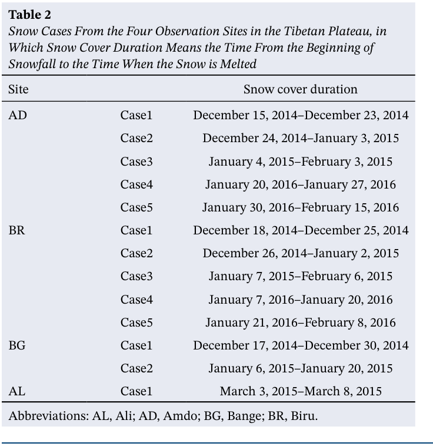
表2
Table 2
青藏高原四个观测站点的降雪个例，其中积雪覆盖持续期指从降雪开始至积雪融化的时段
Snow Cases From the Four Observation Sites in the Tibetan Plateau, in Which Snow Cover Duration Means the Time From the Beginning of Snowfall to the Time When the Snow is Melted
站点
Site
积雪覆盖持续期
Snow cover duration
AD
AD
个例1
Case1
2014年12月15日–2014年12月23日
December 15, 2014–December 23, 2014
个例2
Case2
2014年12月24日–2015年1月3日
December 24, 2014–January 3, 2015
个例3
Case3
2015年1月4日–2015年2月3日
January 4, 2015–February 3, 2015
Case4
Case4
2016年1月20日–2016年1月27日
January 20, 2016–January 27, 2016
Case5
Case5
2016年1月30日–2016年2月15日
January 30, 2016–February 15, 2016
BR
BR
Case1
Case1
2014年12月18日–2014年12月25日
December 18, 2014–December 25, 2014
Case2
Case2
2014年12月26日–2015年1月2日
December 26, 2014–January 2, 2015
Case3
Case3
2015年1月7日–2015年2月6日
January 7, 2015–February 6, 2015
Case4
Case4
2016年1月7日–2016年1月20日
January 7, 2016–January 20, 2016
Case5
Case5
2016年1月21日–2016年2月8日
January 21, 2016–February 8, 2016
BG
BG
Case1
Case1
2014年12月17日–2014年12月30日
December 17, 2014–December 30, 2014
Case2
Case2
2015年1月6日–2015年1月20日
January 6, 2015–January 20, 2015
AL
AL
Case1
Case1
2015年3月3日–2015年3月8日
March 3, 2015–March 8, 2015
缩写：AL，阿里；AD，安多；BG，班戈；BR，比如。
Abbreviations: AL, Ali; AD, Amdo; BG, Bange; BR, Biru.
尽管这些站点有雨量计测量的积雪水当量（SWE）数据，但这些数据可能被严重低估。
Although there are snow water equivalent (SWE) data measured by rain gauges at these sites, the data may be severely underestimated.
这种低估主要是由于强风扰动了降落雪花的轨迹，以及加热装置引起的蒸发（Grossi et al., 2017; Rasmussen et al., 2012）。
The underestimation is mainly due to the trajectory of the falling snowflakes disturbed by strong winds and to the evaporation induced by heating devices (Grossi et al., 2017; Rasmussen et al., 2012).
尤其是TP地区的加热作用和风速均较强。
In particular, both the heating and wind speed are high over the TP.
作为替代方法，我们使用地表反照率判断是否存在积雪覆盖，因为积雪覆盖会改变地表反照率（Cline, 1997; Warren, 1982）。
As an alternative, we used land surface albedo to judge whether snow cover exists or not, since the land surface albedo can be changed by snow cover (Cline, 1997; Warren, 1982).
尽管SWE累积量和积雪覆盖持续期各不相同，TP四个站点的全部13个个例都捕捉到了地表反照率对积雪过程的响应（图2）。
All 13 cases at the four TP sites capture the response of the land surface albedo to snow processes (Figure 2) although the accumulation of the SWE and snow cover duration are different from each other.
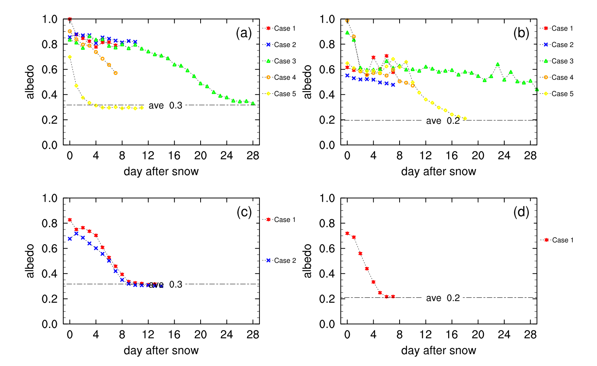
图2。
Figure 2.
四个青藏高原站点各降雪个例的降雪后反照率演变：(a) 安多；(b) 比如；(c) 班戈；(d) 阿里。
Evolution of the albedo after snow for the snow cases at the four Tibetan Plateau sites: (a) Amdo; (b) Biru; (c) Bange; (d) Ali.
点划线表示降雪前月平均反照率。
The dash-dotted line is the monthly mean albedo before snow.
降雪前，安多（AD）、比如（BR）、班戈（BG）和阿里（AL）的月平均反照率分别为0.3、0.2、0.3和0.2。
Before snowfall, the monthly mean albedo at Amdo (AD), Biru (BR), Bange (BG), and Ali (AL) are 0.3, 0.2, 0.3, and 0.2, respectively.
一次降雪后，反照率明显升高。
After a snowfall, the albedo clearly increases.
降雪后第一天的反照率接近0.99，随后逐日降低（例如，AD站点的个例#1和个例#4，以及BR站点的个例#4）。
The albedo on the first day after snow is almost 0.99 and then decreases daily (e.g., Case #1 and Case #4 at the AD site and Case #4 at the BR site).
几乎所有降雪个例的反照率时间序列总体上都呈逐渐降低趋势，但降低速率有所不同。
The time series of the albedo generally show gradual decreases for almost all snow cases, although with different rates of decrease.
积雪对青藏高原站点湍流通量影响的定量分析3.2. Quantitative Analysis of the Impact of Snow on the Turbulent Fluxes at the TP Sites
3.2. 青藏高原各站点积雪对湍流通量影响的定量分析
3.2. Quantitative Analysis of the Impact of Snow on the Turbulent Fluxes at the TP Sites
积雪对 H 的影响见表 3 和图 3。
The effect of snow on H is presented in Table 3 and Figure 3.
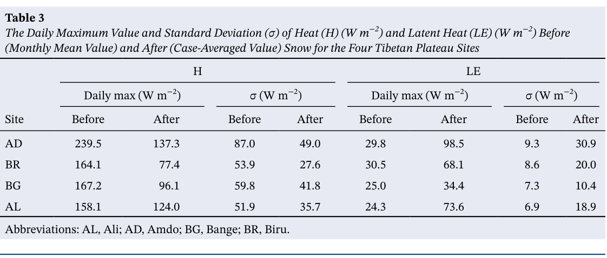
表 3
Table 3
四个青藏高原站点降雪前（月平均值）和降雪后（个例平均值）感热通量（H）（W m⁻²）与潜热通量（LE）（W m⁻²）的日最大值和标准差（σ）
The Daily Maximum Value and Standard Deviation (σ) of Heat (H) (W m⁻²) and Latent Heat (LE) (W m⁻²) Before (Monthly Mean Value) and After (Case-Averaged Value) Snow for the Four Tibetan Plateau Sites
H
H
LE
LE
日最大值（W m⁻²）
Daily max (W m⁻²)
σ（W m⁻²）
σ (W m⁻²)
日最大值（W m⁻²）
Daily max (W m⁻²)
σ（W m⁻²）
σ (W m⁻²)
站点
Site
降雪前
Before
降雪后
After
降雪前
Before
降雪后
After
降雪前
Before
降雪后
After
降雪前
Before
降雪后
After
AD
AD
239.5
239.5
137.3
137.3
87.0
87.0
49.0
49.0
29.8
29.8
98.5
98.5
9.3
9.3
30.9
30.9
BR
BR
164.1
164.1
77.4
77.4
53.9
53.9
27.6
27.6
30.5
30.5
68.1
68.1
8.6
8.6
20.0
20.0
BG
BG
167.2
167.2
96.1
96.1
59.8
59.8
41.8
41.8
25.0
25.0
34.4
34.4
7.3
7.3
10.4
10.4
AL
AL
158.1
158.1
124.0
124.0
51.9
51.9
35.7
35.7
24.3
24.3
73.6
73.6
6.9
6.9
18.9
18.9
缩写：AL，阿里；AD，安多；BG，班戈；BR，比如。
Abbreviations: AL, Ali; AD, Amdo; BG, Bange; BR, Biru.
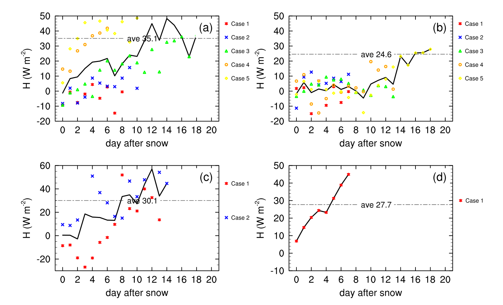
图 3。
Figure 3.
四个青藏高原站点各降雪个例在降雪后的日平均感热通量（单位：W m⁻²）时间序列：(a) 安多；(b) 比如；(c) 班戈；(d) 阿里。
Time series of the daily mean heat (units: W m⁻²) after snowfall for the snow cases at the four TP sites: (a) Amdo; (b) Biru; (c) Bange; (d) Ali.
点划线表示降雪前月平均值，实线表示个例平均值。
The dash-dotted line is the monthly mean value before snow, and the solid line is the case-average value.
AD、BR、BG 和 AL 站降雪前（后）的 H 日最大值分别为 239.5（137.3）、164.1（77.4）、167.2（96.1）和 158.1（124.0）W m⁻²（表 3）。
The daily maximum Hs before (after) snow are 239.5 (137.3), 164.1 (77.4), 167.2 (96.1), 158.1 (124.0) W m⁻² at the AD, BR, BG, and AL sites, respectively (Table 3).
此外，降雪后 H 的标准差（σ）小于降雪前（表 3）。
Furthermore, the standard deviation (σ) of H after snow is smaller than that before snow (Table 3).
上述结果清楚表明，对于青藏高原各站点，降雪后 H 的数值和变化幅度均小于降雪前。
The above results clearly indicate that the value and varying magnitude of H after snow is smaller than that before snow for the TP sites.
显然，积雪减少了 H 从陆面向大气的传输。
Clearly, the snow reduces the transfer of H from the land surface to the atmosphere.
图 3 进一步给出了积雪覆盖持续期内 H 的日演变。
Figure 3 further presents the daily evolution of H during the snow cover duration.
降雪后第一天，H 急剧下降，AD、BR、BG 和 AL 站的个例平均 H 分别降至 −1.0、−1.7、0.4 和 6.9 W m⁻²。
On the first day after snow, sharp decreases in H occur, with the case-averaged Hs decreasing to −1.0, −1.7, 0.4, and 6.9 W m⁻² at the AD, BR, BG, and AL sites, respectively.
这些 H 值远低于四个站降雪前的对应值（分别约为 35.1、24.6、30.1 和 27.7 W m⁻²）。
These Hs are much lower than those (approximately 35.1, 24.6, 30.1, and 27.7 W m⁻², respectively) before snow at the four sites.
在随后数日中，H 逐渐恢复（图 3）。
During the following days, the Hs gradually recover (Figure 3).
四个青藏高原站点所有个例的平均 H（图 5a）进一步证实了 H 起初下降、随后缓慢恢复的过程。
The mean H of all cases at the four TP sites (Figure 5a) further confirms the beginning decrease and the following slow recovery of the H.
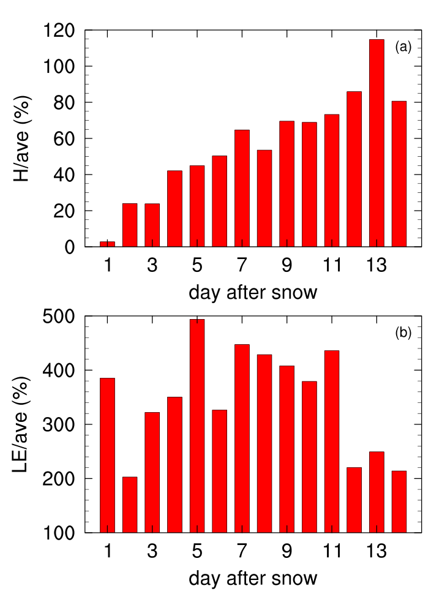
图 5。
Figure 5.
降雪后日平均 (a) 感热通量和 (b) 潜热通量与降雪前平均值之比的直方图。
The histograms of the ratio of daily mean (a) heat and (b) latent heat after snow to the average value before snow.
H 的这一演变过程持续近两周。
This process of evolution of H maintains for almost two weeks.
H 的恢复过程主要取决于地形和天气条件（例如降雪量、气温、太阳辐射和风速）。
The recovery process of H mainly depends on the terrain and weather conditions (e.g., the amount of snow, air temperature, solar radiation, and wind speed).
对于 AD、BR、BG 和 AL 站，H 的个例平均恢复期分别约为 11、15、10 和 5 天。
For the AD, BR, BG, and AL sites, the case-average recovery periods of H are approximately 11, 15, 10, and 5 days, respectively.
全部 13 个个例的平均恢复期约为 13 天（图 5a）。
The average recovery period of all 13 cases is approximately 13 days (Figure 5a).
与 H 不同，LE 的日最大值、平均值和 σ 在降雪前均小于降雪后（表 3 和图 4）。
Different from H, the daily maximum and mean values and σ of LE are smaller before snow than after snow (Table 3 and Figure 4).
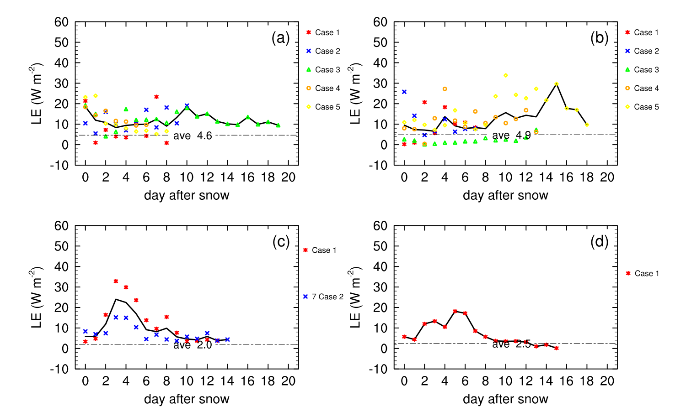
图 4。
Figure 4.
与图 3 相同，但表示潜热通量。
As in Figure 3, but for the latent heat.
这意味着降雪后 LE 变得更强且更为活跃，提示积雪增强了 LE 从陆面向大气的传输。
This signifies that the LE becomes stronger and more active after snowfall, suggesting that the snow enhances the transfer of LE from the land surface to the atmosphere.
积雪所增强的 LE 峰值并不出现在第一天，而是在随后几天出现（图 4 和图 5）。
The peak of the LE increased by snow is not on the first day but in the next few days (Figures 4 and 5).
其原因可能是，LE 达到峰值的时间主要取决于最大融雪发生的时间。
The reason is probably that the time when the LE reaches the peak mainly depends on the time of the maximum snowmelt.
当 LE 达到峰值时，其数值约为降雪前的 500%（图 5）。
When the LE reaches the peak, its value is approximately 500% of that before snow (Figure 5).
此外，LE 的演变过程持续时间长于 H 的恢复期，因为积雪消失后土壤含水量仍可能有助于维持较高的 LE（图 4）。
Additionally, the evolution process of LE persists for a longer period than the recovery period of H, since the soil moisture content may still contribute to a high LE after the disappearance of snow cover (Figure 4).
对青藏高原地表加热的影响3.3. Impact on the TP Surface Heating
3.3. 对青藏高原地表加热的影响
3.3. Impact on the TP Surface Heating
如上所述，积雪使 H 减小、LE 增大，同时导致 H 和 LE 呈现不同的演变过程。
As indicated above, snow reduces H but increases LE, and meanwhile results in different evolution processes of H and LE.
多项研究已论述陆面加热在调制青藏高原天气和气候变化中的重要性（Hsu & Liu, 2003; Rajagopalan & Molnar, 2013; Wang et al., 2018; Wu & Zhang, 1998）。
Several studies have documented the importance of land surface heating in modulating weather and climate changes over the TP (Hsu & Liu, 2003; Rajagopalan & Molnar, 2013; Wang et al., 2018; Wu & Zhang, 1998).
显然，进一步探讨积雪对地表湍流热通量（即 H 与 LE 之和）的总体影响也很重要，该通量被视为青藏高原热源的重要组成部分。
Certainly, it is also important to further explore the total effect of snow on the surface turbulent flux (i.e., the sum of H and LE), which is regarded as a crucial component of the heat source of the TP.
降雪后第一天，地表湍流热通量迅速从 36.7 W m⁻² 降至 13.6 W m⁻²，约为降雪前的 39%（图 6）。
On the first day after snow, the surface turbulent flux rapidly decreases to approximately 39% of that before snow (Figure 6), from 36.7 W m⁻² to 13.6 W m⁻².
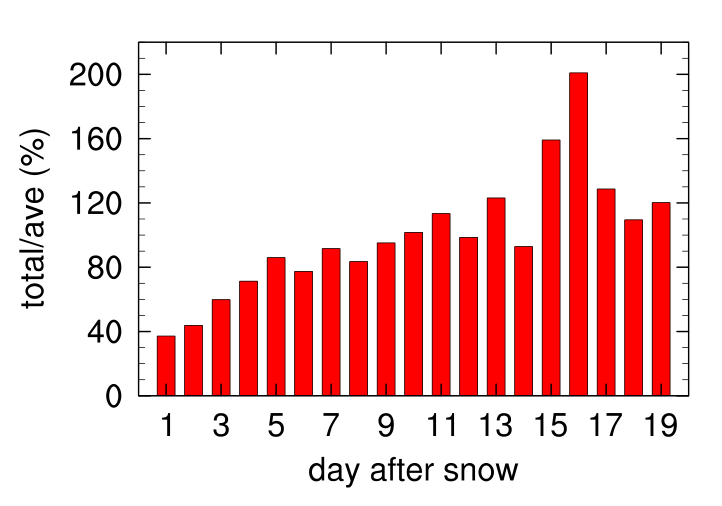
图 6。
Figure 6.
降雪后日平均湍流热通量（即感热通量与潜热通量之和）与降雪前平均湍流热通量之比的直方图。
The histogram of the ratio of the daily mean of the turbulent heat flux (i.e., the sum of heat and latent heat) after snow to the average turbulent heat flux before snow.
这使青藏高原地表加热减弱。
This causes a weaker surface heating of the TP.
尽管逐渐增强，但这种加热在约 10 天内仍弱于降雪前水平，10 天后恢复至降雪前的强度。
This heating maintains a weaker level than before snow for approximately 10 days, although gradually increasing, and then recovers to the magnitude before snow after 10 days.
如第 3.2 节所示，融雪后 H 恢复到原有水平，但由于融雪造成的土壤水分异常，LE 仍维持在较高水平，甚至进一步增大。
As shown in Section 3.2, the H recovers to the original level after the snowmelt, but the LE still maintains and even increases to a higher level because of the soil moisture anomalies caused by the snowmelt.
因此，H 与 LE 的共同作用似乎使融雪后青藏高原的加热甚至大于降雪前；即，更强的加热往往出现在降雪过程之后（图 6）。
Thus, the joint effect of H and LE seems to result in the even larger heating of the TP after the snowmelt than before snow; that is, the stronger heating tends to appear after the process of snowfall (Figure 6).
与降雪事件相关的青藏高原地表加热显著波动，可能对局地及下游天气过程产生明显影响。
The remarkable fluctuation of the surface heating of the TP associated with snow events may exert a pronounced influence on local and downstream weather processes.
青藏高原与低海拔地区地表热通量的比较3.4. Comparison Between the Surface Heat Fluxes Over the TP and Over the Low-Altitude Regions
3.4. 青藏高原与低海拔地区地表热通量的比较
3.4. Comparison Between the Surface Heat Fluxes Over the TP and Over the Low-Altitude Regions
如前几小节所示，青藏高原地表热通量（H 和 LE）受到积雪显著影响。
The surface heat fluxes (H and LE) over the TP are considerably affected by snow, as shown in the previous subsections.
我们想要了解积雪的影响在青藏高原与低海拔地区之间是否存在差异。
We wonder whether the impact of snow is different between the TP and low-altitude regions.
为更清楚、更详细地展示不同地区受积雪影响的地表热通量差异，图 7 和图 8 给出了青藏高原四个站点和低海拔地区两个站点的多冬季平均日变化。
To more clearly and detailly demonstrate the differences of the surface heat fluxes affected by snow between different regions, the multi-winter-averaged diurnal cycles for the four sites in the TP and the two sites in the low regions are presented in Figures 7 and 8.
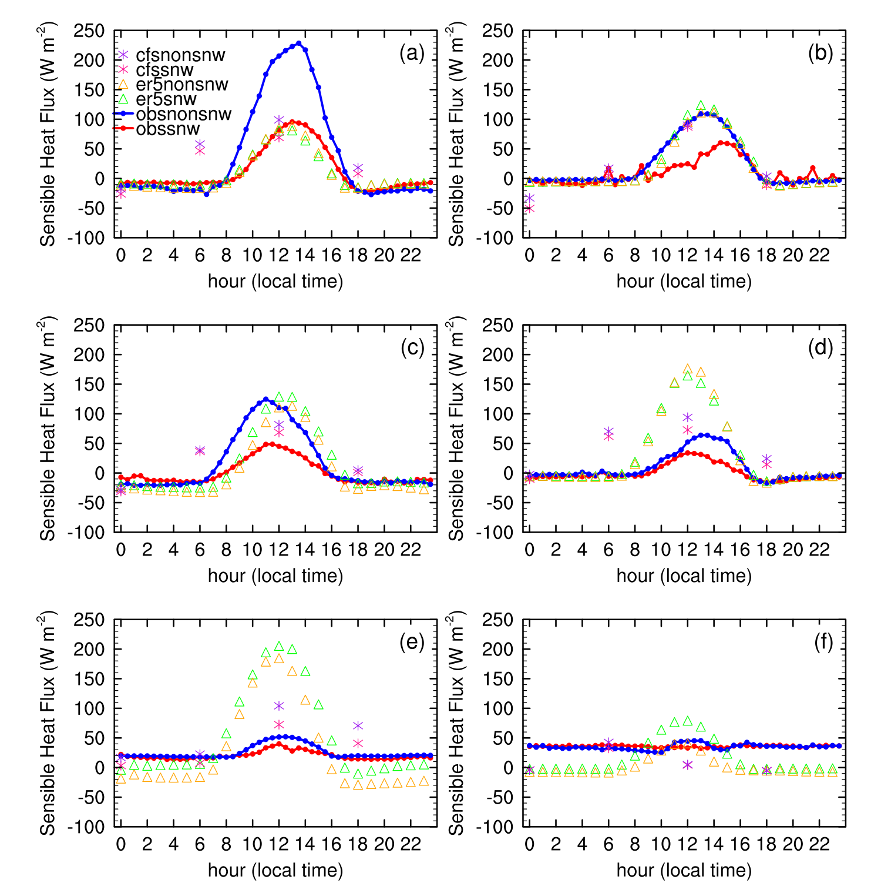
图7。
Figure 7.
有积雪和无积雪条件下H的多冬季平均日变化，站点分别为(a) Amdo、(b) Ali、(c) Bange、(d) Biru、(e) US-AR1和(f) AT-Neu。
Multiwinter-averaged diurnal cycle of H for snow cover and non-snow cover conditions at (a) Amdo, (b) Ali, (c) Bange, (d) Biru, (e) US-AR1, and (f) AT-Neu.
“cfs”表示CFS；“er5”表示ERA5；“obs”表示观测；“nonsnw”表示无积雪；“snw”表示有积雪。
“cfs” means CFS; “er5” means ERA5; “obs” means observation; “nonsnw” means non-snow cover; “snw” means snow cover.
如图 7a–7d 所示，四个青藏高原站点有积雪时的 H（红线）远低于无积雪时（蓝线）。
As shown in Figures 7a–7d, the H with snow cover (red line) is much lower than that without snow cover (blue line) at the four TP sites.
积雪覆盖期站点平均 H 的最大值（59.7 W m⁻²）通常出现在中午和下午，远低于无积雪覆盖期的最大值（131.5 W m⁻²）。
The maximum value (59.7 W m⁻²) of the site-averaged H during the snow cover period, which generally appears at noon and afternoon, is much lower than that (131.5 W m⁻²) during the non-snow cover period.
相比之下，在两个低海拔站点，有积雪与无积雪条件下 H 的差异很小（图 7e 和图 7f）。
In contrast, at the two low-altitude sites, the difference between the H with snow cover and that without snow cover is very small (Figures 7e and 7f).
积雪覆盖期站点平均 H 的最大值（35.5 W m⁻²）相较于无积雪覆盖期（46.7 W m⁻²）并未大幅降低。
The maximum value (35.5 W m⁻²) of the site-averaged H during the snow cover period does not show a large decrease relative to that (46.7 W m⁻²) during the non-snow cover period.
结果表明，青藏高原上 H 因积雪覆盖而大幅下降，而积雪覆盖对低海拔地区 H 的降低作用弱得多。
The results revealed that H is largely decreased by snow cover over the TP, whereas the effect of snow cover in reducing the H is much weaker over the low-altitude regions.
平均绝对差（MAD）进一步表明，在当地时间的中午和下午，四个青藏高原站点有积雪与无积雪条件下 H 的差异（见图 10a–10d 中的黑色曲线）明显大于两个低海拔站点的差异（见图 10e 和图 10f 中的黑色曲线）。
The mean absolute difference (MAD) further shows that at noon and afternoon of local time, the differences between the H with snow cover and that without snow cover at the four TP sites (see black curves in Figures 10a–10d) are clearly larger than those at the two low-altitude sites (see black curves in Figures 10e and 10f).
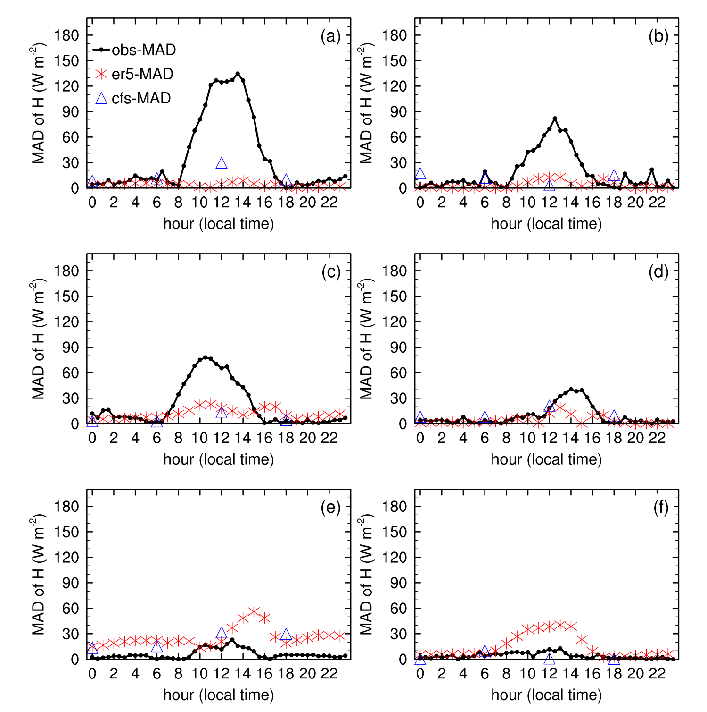
图10。
Figure 10.
观测、ERA5和CFS中积雪与无积雪条件之间H平均绝对差（MAD，W m⁻²）的日变化，站点分别为(a) Amdo、(b) Ali、(c) Bange、(d) Biru、(e) US-AR1和(f) AT-Neu。
Diurnal cycle of the mean absolute difference (MAD, W m⁻²) of H between snow and no snow for observation, ERA5 and CFS at (a) Amdo, (b) Ali, (c) Bange, (d) Biru, (e) US-AR1, and (f) AT-Neu.
“obs”、“cfs”和“er5”分别表示观测、CFS和ERA5。
“obs,” “cfs,” and “er5” denote observation, CFS, and ERA5.
类似地，青藏高原上的 LE 因积雪覆盖而显著增大，积雪覆盖对低海拔地区 LE 的影响也较弱（图 8；LE 的 MAD 图未给出）。
Similarly, the LE is remarkably increased by snow cover over the TP, and the effect of snow cover on the LE is also weaker over the low-altitude regions (Figure 8; the figure of MADs in LE is not shown).
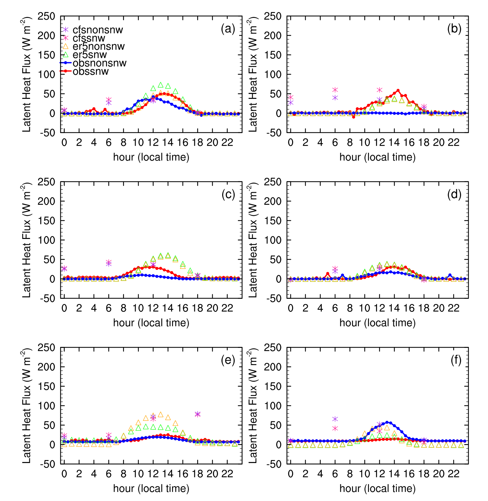
图8。
Figure 8.
同图7，但为潜热通量。
As in Figure 7, but for the latent heat.
地表热通量在有积雪与无积雪条件之间的差异在中午和下午更大。
The difference in the surface heat flux between the snow cover and non-snow cover conditions is larger at noon and afternoon.
这意味着太阳辐射可能至少在一定程度上是造成这种差异的原因。
This implies that the solar radiation may be responsible for, at least partly, such a difference.
与低海拔站点相比，青藏高原站点的地表净太阳辐射（Rn）在有积雪和无积雪条件之间表现出更大的差异（图 9）。
Relative to that at the low-altitude sites, the surface net solar radiation (Rn) at the TP sites shows larger differences between the snow cover and non-snow cover conditions (Figure 9).
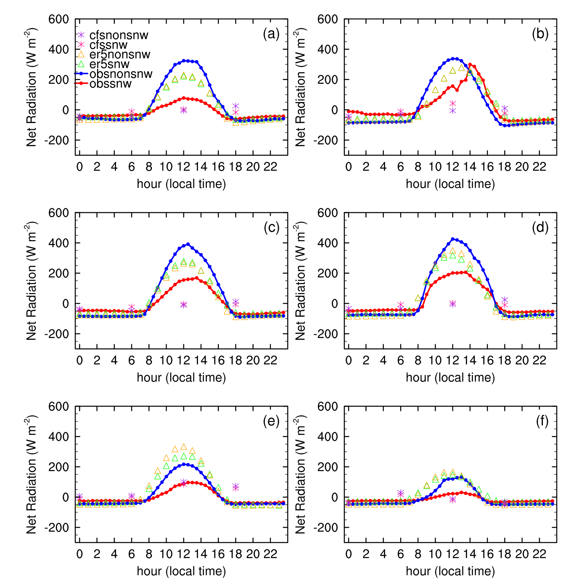
图9。
Figure 9.
同图7，但为地表净太阳辐射。
As in Figure 7, but for the surface net solar radiation.
在青藏高原站点，有积雪（无积雪）时 Rn 的日最大值为 102.2 W m⁻²（369.7 W m⁻²）；而在低海拔站点，有积雪（无积雪）时为 58.5 W m⁻²（134.0 W m⁻²）。
The daily maximum Rn with (without) snow cover is 102.2 W m⁻² (369.7 W m⁻²) at the TP sites, whereas that with (without) snow cover is 58.5 W m⁻² (134.0 W m⁻²) at the low-altitude sites.
结果意味着，青藏高原积雪对 H 和 LE 更强的调制，可能部分归因于该高海拔地区与积雪过程相关的 Rn 变化更大且更剧烈。
The results imply that the stronger modulation of the H and LE by snow over the TP may be partly attributed to the larger and more drastic change of the Rn associated with snow processes in this high-altitude region.
通过计算偏差误差和平均绝对误差（MAE），我们进一步比较了 ERA5 和 CFS 再分析数据集（表 4）。
By calculating bias error and mean absolute error (MAE), we further compared the ERA5 and CFS reanalysis data sets (Table 4).
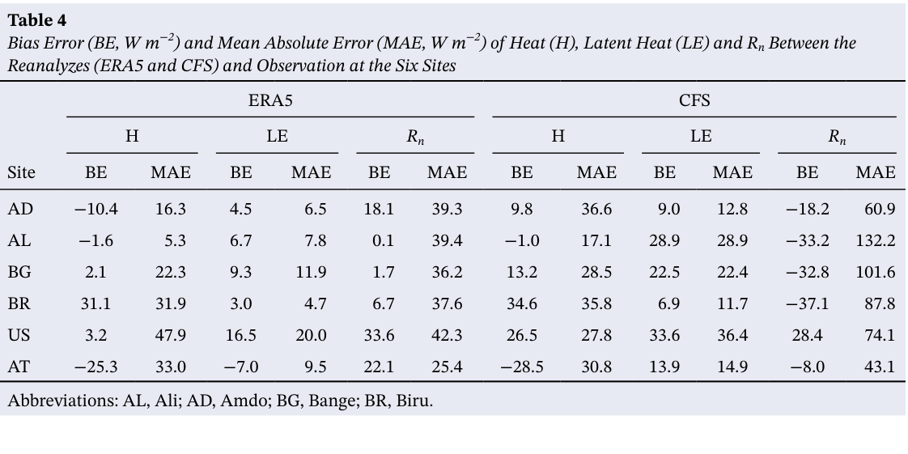
表4
Table 4
六个站点再分析资料（ERA5和CFS）与观测之间感热通量（H）、潜热通量（LE）和地表净太阳辐射（Rₙ）的偏差误差（BE，W m⁻²）与平均绝对误差（MAE，W m⁻²）
Bias Error (BE, W m⁻²) and Mean Absolute Error (MAE, W m⁻²) of Heat (H), Latent Heat (LE) and Rₙ Between the Reanalyzes (ERA5 and CFS) and Observation at the Six Sites
ERA5
ERA5
CFS
CFS
H
H
LE
LE
Rₙ
Rₙ
H
H
LE
LE
Rₙ
Rₙ
站点
Site
BE
BE
MAE
MAE
BE
BE
MAE
MAE
BE
BE
MAE
MAE
BE
BE
MAE
MAE
BE
BE
MAE
MAE
BE
BE
MAE
MAE
AD
AD
−10.4
−10.4
16.3
16.3
4.5
4.5
6.5
6.5
18.1
18.1
39.3
39.3
9.8
9.8
36.6
36.6
9.0
9.0
12.8
12.8
−18.2
−18.2
60.9
60.9
AL
AL
−1.6
−1.6
5.3
5.3
6.7
6.7
7.8
7.8
0.1
0.1
39.4
39.4
−1.0
−1.0
17.1
17.1
28.9
28.9
28.9
28.9
−33.2
−33.2
132.2
132.2
BG
BG
2.1
2.1
22.3
22.3
9.3
9.3
11.9
11.9
1.7
1.7
36.2
36.2
13.2
13.2
28.5
28.5
22.5
22.5
22.4
22.4
−32.8
−32.8
101.6
101.6
BR
BR
31.1
31.1
31.9
31.9
3.0
3.0
4.7
4.7
6.7
6.7
37.6
37.6
34.6
34.6
35.8
35.8
6.9
6.9
11.7
11.7
−37.1
−37.1
87.8
87.8
US
US
3.2
3.2
47.9
47.9
16.5
16.5
20.0
20.0
33.6
33.6
42.3
42.3
26.5
26.5
27.8
27.8
33.6
33.6
36.4
36.4
28.4
28.4
74.1
74.1
AT
AT
−25.3
−25.3
33.0
33.0
−7.0
−7.0
9.5
9.5
22.1
22.1
25.4
25.4
−28.5
−28.5
30.8
30.8
13.9
13.9
14.9
14.9
−8.0
−8.0
43.1
43.1
缩写：AL，Ali；AD，Amdo；BG，Bange；BR，Biru。
Abbreviations: AL, Ali; AD, Amdo; BG, Bange; BR, Biru.
尽管这两个再分析的水平分辨率是迄今最高的（约 9 km），但在青藏高原野外站点，涡动协方差系统的最大通量足迹范围不超过 400 m（Xin et al., 2018）。
Although the horizontal resolution of the two reanalysis is highest as so far (about 9 km), the largest footprint of eddy-covariance system over TP is not beyond 400 m at the TP field sites (Xin et al., 2018).
这种不匹配可能占总误差的相当一部分（Jiménez et al., 2018），应予以谨慎考虑。
This mismatch that can be a substantial fraction of the total error (Jiménez et al., 2018) should be carefully considered.
结果表明，相较于 CFS，ERA5 在青藏高原站点的 H、LE 和 Rn 的 MAE 更小，但在低海拔站点 H 的 MAE 更大（表 4）。
The results show that relative to the CFS, the ERA5 has smaller MAEs for H, LE, and Rn at the TP sites, but larger MAEs for H at the low-altitude sites (Table 4).
总体而言，ERA5 再分析的热通量似乎比 CFS 再分析的更可靠。
Generally speaking, the heat fluxes of the ERA5 reanalysis seem more reliable than those of the CFS reanalysis.
然而，尽管 ERA5 再分析在青藏高原上的热通量可靠性高于 CFS 再分析，它仍严重低估了有积雪与无积雪条件下 H 的差异（图 10a–10d 中的红色星号）。
However, the ERA5 reanalysis severely underestimates the difference between the H with snow cover and that without snow cover (red stars in Figures 10a–10d), although it shows a higher reliability of the heat fluxes than the CFS reanalysis over the TP.
与青藏高原（TP）的结果不同，ERA5再分析高估了低海拔站点有积雪条件与无积雪条件下H之间的差异（图10e和10f中的红色星号）。
Different from the results over the TP, the ERA5 reanalysis overestimates the difference between the H with snow cover and that without snow cover at the low-altitude sites (red stars in Figures 10e and 10f).
CFS再分析的表现更差，因为它甚至无法捕捉这些通量的基本日变化（图7和8），当然也无法再现观测到的有积雪与无积雪条件下H之间的差异（图10中的三角形）。
The CFS reanalysis is worse, since it even cannot capture the basic diurnal cycle of the fluxes (Figures 7 and 8) and certainly cannot reproduce the observational difference between the H with snow cover that without snow cover (triangles in Figure 10).
总之，ERA5和CFS再分析数据集均未能再现积雪对热通量的调制作用。
In summary, both the ERA5 and CFS reanalysis data sets fail to reproduce the modulation of snow on the heat fluxes.
因此，应基于青藏高原（TP）的观测分析进一步改进模式的物理方案，尤其是积雪方案。
Therefore, the physical schemes of the models, particularly the snow scheme, should be further improved based on the observational analysis over TP.
结论与讨论4. Conclusions and Discussion
4. 结论与讨论
4. Conclusions and Discussion
通过调制地表加热，青藏高原（TP）积雪会对冬季亚洲大气环流和天气产生影响（Li et al., 2018）。
Through modulating surface heating, the snow cover over the TP has an influence on the Asian atmospheric circulation and weather during winter (Li et al., 2018).
然而，一个关键问题——积雪如何调制青藏高原（TP）的地表加热以及调制幅度有多大？——仍不清楚；尤其是，由于缺乏观测数据，受积雪调节的青藏高原（TP）地表加热日演变尚未揭示。
However, a key issue—how and by how much is the surface heating of the TP modulated by snow?—remains unclear, in particular, the daily evolution of surface heating of the TP adjusted by snow has not been revealed because of the lack of observational data.
利用第三次青藏高原大气科学试验（TIPEX-III）获得的青藏高原（TP）4个站点的涡动协方差、大气梯度法和太阳辐射观测，研究了与降雪有关的地表湍流加热（即H和LE）日演变。
Using the eddy-covariance, atmospheric gradient, and solar radiation measurements from the 4 sites in the TP obtained from the TIPEX-III, the snowfall-related daily evolution of the surface turbulent heating (i.e., H and LE) is investigated.
结果表明，降雪首日地表反照率骤增至接近1，随后逐渐降低。
The results show that the surface albedo sharply increases to almost one on the first day of snow and then gradually decreases.
相应地，降雪后H通量急剧下降，其值小于降雪前，且变化幅度也与降雪前不同。
Correspondingly, the H flux sharply decreases after snow, with a smaller value and varying magnitude than that before snow.
也就是说，积雪可以抑制H从陆面向大气的传输。
That is, the snow can suppress the transfer of H from the land surface to the atmosphere.
在降雪后的约10天内，H逐渐恢复至原有水平。
During the following approximately 10 days after snow, H gradually recovers to the original level.
与H相反，降雪后LE变得更强、更活跃，表明积雪可以增强LE从陆面向大气的传输。
In contrast to H, the LE becomes stronger and more active after snowfall, indicating that the snow can enhance the transfer of LE from the land surface to the atmosphere.
由积雪造成的LE波动可比H持续更长时间，因为融雪后土壤水分可能仍会促进较高的LE。
The fluctuation of LE resulted from snow can persist for a longer period than H, since the soil moisture may still contribute to a high LE after snowmelt.
尽管积雪对H和LE的作用方向相反，但其对总湍流通量（即H与LE之和）的联合作用很明确：在降雪事件早期，青藏高原（TP）的地表湍流加热减弱；融雪后则甚至增强至高于降雪前的水平。
Although the effect of snow on the H and that on the LE are opposite to each other, the joint effect on the total turbulent flux (i.e., the sum of H and LE) is clear: the surface turbulent heating of the TP decreases at the early period of snow events and then even enhances to a higher level after the snowmelt than before snow.
降雪造成的剧烈波动可能影响冬季局地及下游的大气环流和天气过程，值得今后进一步研究。
The severe fluctuation resulted from snowfall may affect local and downstream atmospheric circulation and weather processes during winter, which deserves further study in the future.
对比分析初步揭示，积雪对青藏高原（TP）H和LE的影响远强于北美和欧洲相近纬度的低海拔地区。
Comparison analyses preliminarily reveal that the impact of snow on the H and LE over the TP is much stronger than over similar latitude low-altitude regions in North America and Europe.
这种差异可能部分归因于青藏高原（TP）与积雪过程相关的地表净太阳辐射变化更大、更剧烈。
This difference may be partly attributable to the larger and more drastic change of the surface net solar radiation associated with snow processes in the TP.
然而，详细过程仍应在未来研究中加以探讨。
However, the detailed processes should be explored in future research.
例如，不同纬度地区太阳辐射—融雪—地表加热之间的联系及其演变过程需要进一步研究。
For example, the solar radiation-snowmelt surface heating link and evolution processes in different latitude regions require further investigation.
尽管直接比较存在不匹配问题（Jiménez et al., 2018），ERA5和CFS再分析数据集仍未能再现积雪对青藏高原（TP）及低海拔地区地表热通量的影响。
The ERA5 and CFS reanalysis data sets fail to reproduce the effect of snow on the surface heat fluxes over the TP and low-altitude regions though the direct comparison has problem in mismatch (Jiménez et al., 2018).
这表明，在使用再分析地表热通量诊断与青藏高原（TP）加热相关的天气尺度过程时应谨慎。
This indicates caution should be taken when using the reanalysis surface heat fluxes to diagnose the TP heating-related synoptic processes.
在获得更多青藏高原（TP）通量观测后，我们将继续验证与降雪事件相关的青藏高原（TP）地表加热日波动。
After obtaining more flux observations in the TP, we will continue to verify the daily fluctuation of the surface heating of the TP associated with snow events.
这有助于理解降雪事件调制冬季亚洲天气过程的详细物理过程，并改进陆面模式中地表能量收支的地表参数化方案。
This is conducive to understand the detailed physical processes of modulation of snow events on Asian weather processes during winter and the improvement of surface parameterization schemes of the surface energy balance in the land surface models.
数据可用性声明Data Availability Statement
数据可用性声明
Data Availability Statement
六个站点的现场观测数据可从 https://doi.org/10.6084/m9.figshare.14471283 获取；ERA5再分析数据集由欧洲中期天气预报中心公开提供（https://cds.climate.copernicus.eu/cdsapp#!/dataset/10.24381/cds.e2161bac?tab=overview, doi:10.24381/cds.e2161bac）；CFS再分析数据集由美国国家海洋和大气管理局公开提供（https://rda.ucar.edu/datasets/ds094.1/, https://doi.org/10.5065/D6N877VB）。
The in-situ data of six sites can be found at https://doi.org/10.6084/m9.figshare.14471283; The ERA5 reanalysis data set were publicly provided by European Centre for Medium-Range Weather Forecasts (https://cds.climate.copernicus.eu/cdsapp#!/dataset/10.24381/cds.e2161bac?tab=overview, doi:10.24381/cds.e2161bac); The CFS reanalysis data sets were publicly provided by National Oceanic and Atmospheric Administration (https://rda.ucar.edu/datasets/ds094.1/, https://doi.org/10.5065/D6N877VB).
致谢Acknowledgments
致谢
Acknowledgments
本研究得到中国国家重点研发计划（项目2018YFC1505706）、中国科学院战略性先导科技专项（项目XDA20100300）、第二次青藏高原科学考察研究（STEP）项目（2019QZKK0105）、中国气象科学研究院（CAMS）科技发展基金（项目2019KJ022）和中国气象科学研究院（CAMS）基本科研业务费（项目2019Z008）的资助。
This research was funded by the National Key Research and Development Program of China (grant 2018YFC1505706), the Strategic Priority Research Program of the Chinese Academy of Sciences (grant XDA20100300), the Second Tibetan Plateau Scientific Expedition and Research (STEP) program (2019QZKK0105), the Science and Technology Development fund of CAMS (grant 2019KJ022) and the Basic Research fund of CAMS (grant 2019Z008).